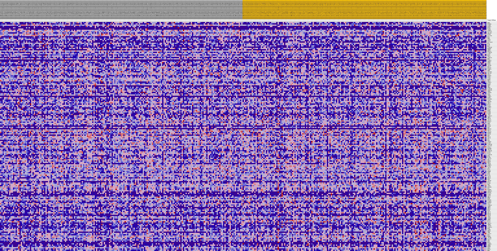
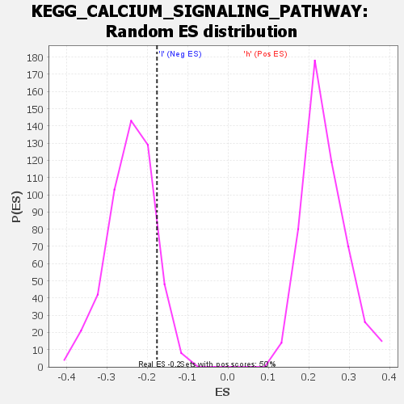

| | | Dataset | VCAN.VCAN.cls#h_versus_l.VCAN.cls#h_versus_l_repos |
| Phenotype | VCAN.cls#h_versus_l_repos |
| Upregulated in class | l |
| GeneSet | KEGG_CALCIUM_SIGNALING_PATHWAY |
| Enrichment Score (ES) | -0.17622015 |
| Normalized Enrichment Score (NES) | -0.72734 |
| Nominal p-value | 0.90160644 |
| FDR q-value | 1.0 |
| FWER p-Value | 1.0 |
Table: GSEA Results Summary
 Fig 1: Enrichment plot: KEGG_CALCIUM_SIGNALING_PATHWAY
Fig 1: Enrichment plot: KEGG_CALCIUM_SIGNALING_PATHWAY
Profile of the Running ES Score & Positions of GeneSet Members on the Rank Ordered List
| SYMBOL | TITLE | RANK IN GENE LIST | RANK METRIC SCORE | RUNNING ES | CORE ENRICHMENT | | 1 | DRD5 | na | 84 | 0.141 | 0.0175 | No |
| 2 | PTGER3 | na | 1076 | 0.096 | 0.0124 | No |
| 3 | CALM3 | na | 1139 | 0.095 | 0.0239 | No |
| 4 | GRIN2A | na | 1215 | 0.093 | 0.0351 | No |
| 5 | NTSR1 | na | 1235 | 0.093 | 0.0472 | No |
| 6 | TACR3 | na | 1283 | 0.092 | 0.0587 | No |
| 7 | CAMK2D | na | 1363 | 0.090 | 0.0694 | No |
| 8 | SLC25A5 | na | 2054 | 0.081 | 0.0677 | No |
| 9 | ADRA1B | na | 2400 | 0.077 | 0.0718 | No |
| 10 | P2RX4 | na | 2502 | 0.076 | 0.0802 | No |
| 11 | SLC25A6 | na | 3201 | 0.070 | 0.0769 | No |
| 12 | NOS1 | na | 3337 | 0.069 | 0.0837 | No |
| 13 | GRM1 | na | 3441 | 0.068 | 0.0909 | No |
| 14 | TACR2 | na | 3522 | 0.067 | 0.0985 | No |
| 15 | P2RX2 | na | 3593 | 0.067 | 0.1063 | No |
| 16 | SLC25A31 | na | 3713 | 0.066 | 0.1129 | No |
| 17 | BST1 | na | 3734 | 0.066 | 0.1214 | No |
| 18 | OXTR | na | 4686 | 0.059 | 0.1120 | No |
| 19 | NOS2 | na | 4874 | 0.057 | 0.1163 | No |
| 20 | CACNA1B | na | 5272 | 0.055 | 0.1165 | No |
| 21 | BDKRB2 | na | 6065 | 0.050 | 0.1089 | No |
| 22 | CHRM2 | na | 6227 | 0.049 | 0.1126 | No |
| 23 | PRKACA | na | 6513 | 0.048 | 0.1138 | No |
| 24 | CACNA1G | na | 7294 | 0.044 | 0.1056 | No |
| 25 | CALM2 | na | 7610 | 0.042 | 0.1055 | No |
| 26 | NOS3 | na | 7789 | 0.041 | 0.1079 | No |
| 27 | ADCY7 | na | 8439 | 0.038 | 0.1012 | No |
| 28 | CACNA1S | na | 8833 | 0.036 | 0.0989 | No |
| 29 | HRH1 | na | 9020 | 0.035 | 0.1003 | No |
| 30 | CALML3 | na | 9270 | 0.034 | 0.1004 | No |
| 31 | CHRNA7 | na | 9371 | 0.034 | 0.1031 | No |
| 32 | SPHK1 | na | 9500 | 0.033 | 0.1052 | No |
| 33 | P2RX3 | na | 9507 | 0.033 | 0.1095 | No |
| 34 | ATP2B3 | na | 9598 | 0.033 | 0.1123 | No |
| 35 | PDE1A | na | 10024 | 0.031 | 0.1087 | No |
| 36 | PPP3CC | na | 10404 | 0.029 | 0.1058 | No |
| 37 | CAMK2A | na | 10804 | 0.027 | 0.1022 | No |
| 38 | GRM5 | na | 10878 | 0.027 | 0.1045 | No |
| 39 | CYSLTR1 | na | 10891 | 0.027 | 0.1079 | No |
| 40 | TBXA2R | na | 10938 | 0.027 | 0.1107 | No |
| 41 | VDAC1 | na | 10955 | 0.027 | 0.1140 | No |
| 42 | GRIN2C | na | 11442 | 0.025 | 0.1085 | No |
| 43 | AGTR1 | na | 11793 | 0.023 | 0.1053 | No |
| 44 | CALM1 | na | 12002 | 0.022 | 0.1045 | No |
| 45 | ERBB2 | na | 12042 | 0.022 | 0.1068 | No |
| 46 | PHKA1 | na | 12381 | 0.021 | 0.1035 | No |
| 47 | AVPR1A | na | 13549 | 0.017 | 0.0845 | No |
| 48 | PLCD3 | na | 13562 | 0.017 | 0.0865 | No |
| 49 | SPHK2 | na | 13785 | 0.016 | 0.0846 | No |
| 50 | CHP2 | na | 13868 | 0.015 | 0.0852 | No |
| 51 | ADRB1 | na | 13904 | 0.015 | 0.0866 | No |
| 52 | CACNA1F | na | 14003 | 0.015 | 0.0869 | No |
| 53 | ADORA2B | na | 14134 | 0.014 | 0.0865 | No |
| 54 | ADRB2 | na | 14225 | 0.014 | 0.0867 | No |
| 55 | AVPR1B | na | 14290 | 0.014 | 0.0874 | No |
| 56 | CD38 | na | 14344 | 0.014 | 0.0883 | No |
| 57 | ITPR3 | na | 14583 | 0.013 | 0.0857 | No |
| 58 | CALML5 | na | 14712 | 0.012 | 0.0850 | No |
| 59 | GRIN1 | na | 15093 | 0.011 | 0.0796 | No |
| 60 | CYSLTR2 | na | 15196 | 0.011 | 0.0792 | No |
| 61 | TACR1 | na | 15314 | 0.010 | 0.0785 | No |
| 62 | PRKACB | na | 15984 | 0.008 | 0.0674 | No |
| 63 | TRPC1 | na | 16130 | 0.008 | 0.0658 | No |
| 64 | MYLK3 | na | 16203 | 0.008 | 0.0655 | No |
| 65 | PLCD1 | na | 16748 | 0.006 | 0.0564 | No |
| 66 | PTGER1 | na | 16953 | 0.005 | 0.0534 | No |
| 67 | PLCZ1 | na | 17046 | 0.005 | 0.0524 | No |
| 68 | P2RX6 | na | 17406 | 0.004 | 0.0464 | No |
| 69 | EDNRA | na | 17441 | 0.004 | 0.0463 | No |
| 70 | PTAFR | na | 17634 | 0.003 | 0.0433 | No |
| 71 | PTGFR | na | 17686 | 0.003 | 0.0428 | No |
| 72 | ITPKA | na | 17888 | 0.003 | 0.0395 | No |
| 73 | CACNA1I | na | 18132 | 0.002 | 0.0354 | No |
| 74 | TNNC1 | na | 18346 | 0.001 | 0.0317 | No |
| 75 | PDE1B | na | 18420 | 0.001 | 0.0305 | No |
| 76 | ATP2A1 | na | 21411 | -0.001 | -0.0236 | No |
| 77 | PPP3CA | na | 21719 | -0.002 | -0.0289 | No |
| 78 | P2RX1 | na | 21781 | -0.002 | -0.0297 | No |
| 79 | PHKB | na | 22144 | -0.003 | -0.0358 | No |
| 80 | P2RX5 | na | 22228 | -0.003 | -0.0369 | No |
| 81 | CCKAR | na | 22517 | -0.004 | -0.0416 | No |
| 82 | GNAL | na | 22547 | -0.004 | -0.0415 | No |
| 83 | PRKACG | na | 22835 | -0.005 | -0.0461 | No |
| 84 | GNA15 | na | 24093 | -0.008 | -0.0677 | No |
| 85 | ATP2A2 | na | 24425 | -0.009 | -0.0725 | No |
| 86 | BDKRB1 | na | 24561 | -0.010 | -0.0736 | No |
| 87 | PTK2B | na | 24659 | -0.010 | -0.0741 | No |
| 88 | DRD1 | na | 24746 | -0.010 | -0.0743 | No |
| 89 | GNA11 | na | 24794 | -0.010 | -0.0737 | No |
| 90 | ADCY9 | na | 24862 | -0.011 | -0.0735 | No |
| 91 | F2R | na | 25087 | -0.011 | -0.0761 | No |
| 92 | RYR1 | na | 25172 | -0.011 | -0.0761 | No |
| 93 | LTB4R2 | na | 25722 | -0.013 | -0.0843 | No |
| 94 | PLCB3 | na | 25772 | -0.013 | -0.0835 | No |
| 95 | CACNA1H | na | 26093 | -0.014 | -0.0874 | No |
| 96 | SLC25A4 | na | 26148 | -0.014 | -0.0865 | No |
| 97 | P2RX7 | na | 26232 | -0.014 | -0.0861 | No |
| 98 | PDGFRB | na | 26430 | -0.015 | -0.0877 | No |
| 99 | ADRA1D | na | 26910 | -0.016 | -0.0942 | No |
| 100 | CACNA1E | na | 26915 | -0.016 | -0.0921 | No |
| 101 | PLCB2 | na | 26949 | -0.016 | -0.0906 | No |
| 102 | PLCG1 | na | 27958 | -0.019 | -0.1063 | No |
| 103 | CACNA1D | na | 28232 | -0.020 | -0.1086 | No |
| 104 | HTR4 | na | 28450 | -0.020 | -0.1098 | No |
| 105 | PLCB4 | na | 28699 | -0.021 | -0.1115 | No |
| 106 | ATP2A3 | na | 28759 | -0.021 | -0.1097 | No |
| 107 | PHKA2 | na | 29184 | -0.022 | -0.1143 | No |
| 108 | PRKCB | na | 29388 | -0.023 | -0.1149 | No |
| 109 | PRKCA | na | 29393 | -0.023 | -0.1119 | No |
| 110 | LHCGR | na | 29554 | -0.023 | -0.1117 | No |
| 111 | CAMK2G | na | 29644 | -0.024 | -0.1101 | No |
| 112 | PLCD4 | na | 29764 | -0.024 | -0.1090 | No |
| 113 | ADCY3 | na | 30182 | -0.025 | -0.1132 | No |
| 114 | MYLK | na | 30684 | -0.027 | -0.1187 | No |
| 115 | VDAC3 | na | 31391 | -0.028 | -0.1277 | No |
| 116 | EDNRB | na | 31661 | -0.029 | -0.1287 | No |
| 117 | GRPR | na | 32198 | -0.031 | -0.1343 | No |
| 118 | PPID | na | 32791 | -0.032 | -0.1407 | No |
| 119 | PLCE1 | na | 33571 | -0.035 | -0.1501 | No |
| 120 | ADCY4 | na | 34030 | -0.036 | -0.1537 | No |
| 121 | PRKCG | na | 34922 | -0.038 | -0.1647 | No |
| 122 | GNAS | na | 35456 | -0.040 | -0.1691 | Yes |
| 123 | ATP2B1 | na | 35556 | -0.040 | -0.1655 | Yes |
| 124 | HTR2C | na | 35783 | -0.040 | -0.1642 | Yes |
| 125 | PLCB1 | na | 35807 | -0.041 | -0.1591 | Yes |
| 126 | PRKX | na | 35880 | -0.041 | -0.1549 | Yes |
| 127 | ITPR2 | na | 36056 | -0.041 | -0.1526 | Yes |
| 128 | PPP3CB | na | 36325 | -0.042 | -0.1518 | Yes |
| 129 | PLN | na | 36534 | -0.042 | -0.1499 | Yes |
| 130 | PDGFRA | na | 36741 | -0.043 | -0.1479 | Yes |
| 131 | ADORA2A | na | 36821 | -0.043 | -0.1435 | Yes |
| 132 | PPP3R2 | na | 37202 | -0.044 | -0.1445 | Yes |
| 133 | SLC8A2 | na | 37239 | -0.044 | -0.1392 | Yes |
| 134 | CCKBR | na | 37495 | -0.045 | -0.1378 | Yes |
| 135 | ADCY2 | na | 37582 | -0.045 | -0.1333 | Yes |
| 136 | PHKG2 | na | 37710 | -0.045 | -0.1295 | Yes |
| 137 | EGFR | na | 38054 | -0.046 | -0.1294 | Yes |
| 138 | PPP3R1 | na | 38971 | -0.049 | -0.1395 | Yes |
| 139 | CALML6 | na | 39536 | -0.050 | -0.1430 | Yes |
| 140 | GRIN2D | na | 39622 | -0.051 | -0.1377 | Yes |
| 141 | VDAC2 | na | 40782 | -0.054 | -0.1516 | Yes |
| 142 | CACNA1C | na | 40831 | -0.054 | -0.1452 | Yes |
| 143 | ADRB3 | na | 40852 | -0.054 | -0.1383 | Yes |
| 144 | TNNC2 | na | 41583 | -0.056 | -0.1441 | Yes |
| 145 | PDE1C | na | 42232 | -0.058 | -0.1481 | Yes |
| 146 | RYR3 | na | 42730 | -0.059 | -0.1492 | Yes |
| 147 | ADCY1 | na | 42858 | -0.059 | -0.1435 | Yes |
| 148 | GNA14 | na | 43219 | -0.061 | -0.1419 | Yes |
| 149 | HTR2B | na | 43255 | -0.061 | -0.1343 | Yes |
| 150 | ADCY8 | na | 45057 | -0.066 | -0.1581 | Yes |
| 151 | ITPR1 | na | 45471 | -0.067 | -0.1566 | Yes |
| 152 | ITPKB | na | 45622 | -0.068 | -0.1502 | Yes |
| 153 | CHRM1 | na | 45979 | -0.069 | -0.1474 | Yes |
| 154 | MYLK2 | na | 47536 | -0.074 | -0.1656 | Yes |
| 155 | PLCG2 | na | 47713 | -0.075 | -0.1588 | Yes |
| 156 | ADRA1A | na | 48070 | -0.076 | -0.1550 | Yes |
| 157 | CHRM5 | na | 49238 | -0.080 | -0.1654 | Yes |
| 158 | ATP2B2 | na | 49379 | -0.081 | -0.1571 | Yes |
| 159 | CACNA1A | na | 50341 | -0.085 | -0.1631 | Yes |
| 160 | HTR6 | na | 50518 | -0.086 | -0.1547 | Yes |
| 161 | CAMK4 | na | 50631 | -0.087 | -0.1451 | Yes |
| 162 | PHKG1 | na | 51549 | -0.092 | -0.1494 | Yes |
| 163 | TRHR | na | 51797 | -0.093 | -0.1413 | Yes |
| 164 | SLC8A1 | na | 51824 | -0.093 | -0.1293 | Yes |
| 165 | HTR7 | na | 52209 | -0.096 | -0.1234 | Yes |
| 166 | ERBB3 | na | 52276 | -0.096 | -0.1117 | Yes |
| 167 | ATP2B4 | na | 52303 | -0.096 | -0.0992 | Yes |
| 168 | SLC8A3 | na | 52632 | -0.098 | -0.0919 | Yes |
| 169 | CHP1 | na | 52893 | -0.101 | -0.0831 | Yes |
| 170 | RYR2 | na | 52917 | -0.101 | -0.0700 | Yes |
| 171 | HTR5A | na | 53192 | -0.103 | -0.0611 | Yes |
| 172 | CAMK2B | na | 53503 | -0.106 | -0.0524 | Yes |
| 173 | CHRM3 | na | 53520 | -0.107 | -0.0383 | Yes |
| 174 | ERBB4 | na | 54328 | -0.117 | -0.0372 | Yes |
| 175 | GNAQ | na | 54427 | -0.119 | -0.0230 | Yes |
| 176 | HTR2A | na | 54917 | -0.133 | -0.0139 | Yes |
| 177 | HRH2 | na | 55137 | -0.150 | 0.0024 | Yes |
Table: GSEA details [plain text format]

Fig 2: KEGG_CALCIUM_SIGNALING_PATHWAY
Blue-Pink O' Gram in the Space of the Analyzed GeneSet

Fig 3: KEGG_CALCIUM_SIGNALING_PATHWAY: Random ES distribution
Gene set null distribution of ES for KEGG_CALCIUM_SIGNALING_PATHWAY